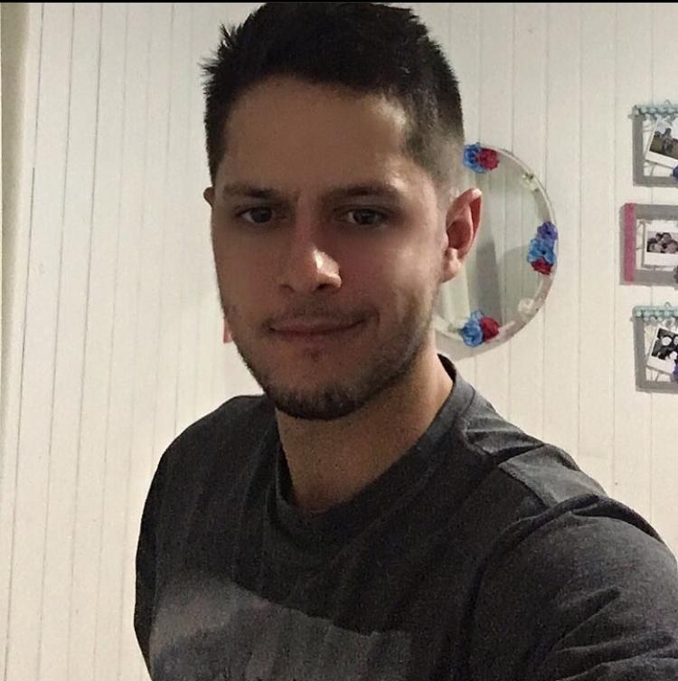

Pedro de Oliveira Verissimo
Data de Nascimento: 23/03/1997
Rua Guilherme Palumbo N.º 312
Centro
+55 (47) 99138 7423
+55 (47) 3311 6921
pedro.verissimo@acad.pucrs.br
Experiência
Agosto 2019
Operador de Produção
Navegantes, Brasil
Criação de chicotes elétricos, desde a conexão dos circuitos em seus respectivos conectores à implementação dos testes elétricos.
Verificação do bom andamento do processo produtivo.
Atendimento do posto na velocidade solicitada
Auxiliar colegas de equipe em seus postos
Educação
De março de 2016 a agosto de 2017 - Pontifícia Universidade Católica do Rio Grande do Sul - Ciência da Computação
De março de 2018 a março de 2019 - Universidade Federal do Rio Grande do Sul - Administração
De março de 2020 em diante - Universidade do vale do Itajaí - Ciência da Computação
Aptidões e competências pessoais
Comprometido com o término de seus deveres
Boa lógica
Aprendizado rápido
Línguas
Inglês Avançado e Espanhol Básico
Informações adicionais
Java intermediário
HTML básico
C++ intermediário